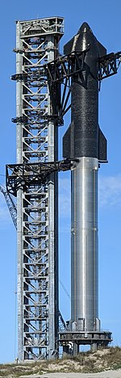

Available Spaceships
Falcon 9

Falcon 9 is a partially reuseable, medium lift launch vehicle that can carry cargo and crew into Earth orbit, produced by American aerospace company SpaceX.
Falcon Heavy

Falcon Heavy is a partially reusable heavy-lift launch vehicle that is produced by SpaceX, an American aerospace manufacturer. The rocket consists of two strap-on boosters made from Falcon 9 first stages, a center core also made from a Falcon 9 first stage, and a second stage on top
Starship
Starship is a fully-reusable, super-heavy-lift launch vehicle being developed by SpaceX, an American aerospace manufacturer. It is the tallest and most powerful launch vehicle ever built. Starship is a two-stage-to-orbit launch vehicle, consisting of the Super Heavy booster stage and the Starship second stage or spacecraft.